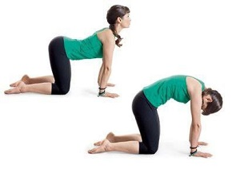

Йога - це...
Шлях до гармонії душі та тіла. Заняття йогою перестало бути екзотикою і міцно увійшло в повсякденне життя. Завдяки цій системі вправ, дихання і мислення реально підтримувати в здоровому тілі здоровий дух. Саме йогою голлівудські зірки зобов'язані своєю енергійністю та підтягнутою фігурою.
Перед тим, як розпочати йогу для початківців, варто:
- Визначтесь з видом. Йога для початківців буває різною: хатха, кундаліні йога, флай і т. д.
- Знайдіть онлайн-заняття або урок. Йога для початківців доступна у вигляді безкоштовних роликів в Youtube. Це відмінне рішення для тих, хто бажає займатися вдома.
- Підберіть комфортний одяг для занять. Заняття йогою вимагає вбрання з натуральних тканин. Вільні футболки, «аладіни», штани з матеріалу, що дихає. Підберіть час і локацію. Якщо флай йога вимагає особливих пристосувань (підвісних гамаків), то рештою йог можна займатися вдома.
- Придбайте спеціальний килимок, і вперед. Що стосується часу, то пози йоги робляться на голодний шлунок.
- Значить свій йога челендж проводьте відразу після пробудження або через 3-4 години після їжі. Приміщення для йоги перед заняттям провітріть. Можете запалити улюблену аромапаличку.
Що я отримаю з йогою?
За статистикою, йогою займається близько 300 мільйонів людей у світі, і з кожним роком число її
послідовників тільки зростає. Популярність йоги — це відображення загального світового тренду на здоровий
спосіб життя, усвідомленість і позитивне мислення.
Кажуть, що заняття йогою мають багато переваг як для психічного, так і для фізичного здоров’я: може зменшити
стрес, зняти тривожність, покращити сон, навички балансу, гнучкості та стабілізації. Також практики йоги
допомагають покращити роботу легень та дихання.
Йога для початківців: п'ять асан для домашнього тренування
- Бокові скручування
- Поза кішка-корова
- Балансуючий стіл
- Розтягування воїна
Йога збільшує тривалість життя. Вона допомагає розширити легені та приносить користь серцю. А перевернуті пози сприяють уповільненню процесів старіння в організмі. Практика перевернутих поз протидіє силі тяжіння і допомагає внутрішнім органам прийняти вихідне положення.
Йога за 15 хвилин
Якщо ви ще жодного разу не пробували займатися йогою, то варто почати з відео “Йога за 15 хвилин”. Це заняття за короткий час допоможе вам більше відчути своє тіло, опрацювати всі групи м’язів та краще зрозуміти ваше особисте ставлення до йоги. Ласкаво просимо
Знайти себе
Йогу може практикувати практично кожен бажаючий. У ній немає обмежень за віком, статевою ознакою і за іншими параметрами. Для занять не потрібно спеціального устаткування, тренажерів або залу. А якщо хочеться можна завжди, щось почитати. наприклад Oсь тут
- Сила йоги. Асаны для повседневной жизни, секреты красоты и гармоничных отношений. Гуру Джагат
- Йога для тебе
- Practical Ayurveda
- Йога-антистресс. Мягко успокаивает. Снимает тревогу. Роберт Бутера
- Йога. С чего начать. Инна Видгоф
- Тибетская йога дыхания. Эниен Ринпоче, Элисон Чоинг Зангмо
- Внутренняя инженерия. Путь к радости. Садхгуру
П'ять асан для домашнього тренування
В первоисточниках под асаной понимается удобное и приятное положение тела,
но сказать,
что это действительно
так, значит соврать. Для начинающего йога наклоны и прогибы – довольно неприятная штука.
Однако
считается,
что асана действительно станет удобной, когда ваше тело будет абсолютно расслаблено, а разум
сосредоточен на бесконечном.
По секрету, это не всегда под силу даже самым опытным йогам.
Які пози ми напевно знаємо?
- Баддха Конасана – поза метелика
- Пашчимоттанасана
- Тадасана – поза гори
- Мандукасана – поза жабки
- Капотасана – поза голуба
- Ардха Падмасана – поза напівлотоса
- Вришчикасана – поза скорпиону
Собака мордою вниз
Опустіться вниз. Витягніться руками вперед. Згинайте по черзі коліна, відриваючи стопи
від підлоги. Виконуйте вправу не поспішаючи протягом 50 секунд.
Адхо мукха шванасана, або собака
мордою вниз, мабуть, одна з найпопулярніших асан в йозі. Багато
практикуючих йогу додали її в список обов’язкових для виконання.
І недарма, адже асана виходить за
рамки
звичайного вправи.
В першу чергу, це духовна практика, здатна зцілювати душу і тіло.
Kішка-корова
«Марджари» на санскрите означает «кошка». Марджариасана в дословном переводе означает
«поза
потягивающегося кота», но больше известна как кошка-корова.
Kобра
Бхуджангасана в йозі входить у найвідоміші цикли асан, а також віньяс – зв’язок. Вона використовується в
динамічних варіантах і в статичному виконанні. Це одна з базових асан, яка допомагає підтримувати
оптимальний режим роботи всіх фізіологічних систем організму.
Для мам і малюків
Мрієте почати здоровий спосіб життя і отримати гарне тіло за допомогою йоги для схуднення? Це реально. Але не розраховуйте на швидке схуднення. Йоги зі стажем кажуть, що скинути зайву вагу можна за півроку регулярних занять по 3 рази на тиждень тривалістю 60 хвилин. Детальніше
- Дитина навчиться правильно і глибоко дихати . Спочатку ці вміння він буде застосовувати тільки на заняттях, але поступово грудна клітка зміцнюється, обсяг легких збільшується, а значить, організм краще насичується киснем і в повсякденному житті.
- Йога – кращий спосіб для розслаблення . Якщо ваша дитина гіперактивна, то розслабитися і заспокоїтися після насиченого дня йому допоможуть спеціальні асани. Цю дисципліну як заспокійливої нерідко призначають збудливим дітям неврологи і психологи.
- Вона зміцнить кістковий скелет, зробить тіло гнучким, сильним і гармонійно розвиненим.
- Це корисно для хребта, так як під час тренування використовуються і скручування і розтягування, завдяки йозі у малюка буде здоровий, міцний хребет, а також гарна постава.
- Виявляється, йога допомагає стати «розумніші»! На заняттях активно працює шийний відділ хребта, а це сприяє поліпшенню харчування головного мозку, а також знімає навантаження з очей.
- Особливо корисні елементи з участю шийного відділу хребта дітям, які часто хворіють на простудні захворювання, такі асани допоможуть зміцнити слабку носоглотку і горло.
Йога-тури
Чудові локації
Без сумніву, однією з основних і важливих складових будь-якого йога туру є місце проведення. Як правило,
тури проводяться в найкрасивіших і відокремлених місцях – біля моря або в горах.
Уявіть – практика
на тлі
мальовничих гірських або морських пейзажів, поруч з лісовою прохолодою або під шум хвиль? А як же
прекрасно насолоджуватися чудовими видами, після активних вправ йогою?
Чисте гірське або морське повітря, шум хвиль і дерев, спів птахів – все це далеко від міської метушні і
турбот допоможе знайти душевний спокій і усвідомити радість буття.
Тут ви повною мірою насолодитеся
моментом, зупинившись в “тут і зараз”. Це треба обов’язково пробувати! Але є і небезпека – затягує
Забронювати місце
Йога для дітей
Спорт для найменших. Йога для дітей: користь та вправи, з яких можна почати
Дитяча йога ‒ це своєрідна гімнастика, що здатна зміцнити тіло і покращити когнітивні функції мозку.
Попри те, що для занять йогою немає вікових обмежень, експерти вважають найоптимальнішим віком для
початку занять дошкільний та молодший шкільний вік (6-8 років). У цьому віці дитина вже здатна
сприймати пояснення до вправ для правильного виконання.
Особливо корисна йога учням початкових та середніх класів, адже у цьому віці відбувається бурхливий
ріст і розвиток.
Довгі години за партами, важкі наплічники та емоційне виснаження негативно впливають на формування
здорового організму.
Регулярні заняття йогою сприяють пластичності, формують правильну поставу, покращують координацію
рухів та здатність концентруватися. Також його здатна зняти стрес і тривожність, покращити сон та
настрій.
Йога для дітей молодшого віку (3-5 років) складається переважно з динамічних вправ, оскільки дітям
важко довго знаходитися в одній позі.
Активні вправи можна поєднувати зі статичними в ігровій формі, наприклад за допомогою гри "море
хвилюється раз". Щоб налаштувати дитину на релаксацію наприкінці заняття, необхідно вдатися до
метафоричних образів. Тут фантазія батьків (або викладачів) немає меж.
Детальніше
Відгуки наших фанатів
Дякую, Всесвіту за те, що Вас я тут знайшов
Ану, позвоніть нам
Позвонити прямо зараз, ми Вам раді
+38019123456789Для емейликів
E-mailМи в соцмережах
Де ми можемо зустрітися?
Пошукаємо карту Google
Йога як стиль життя
Милота для гарного настрою!!!
ми такі няшні, няшні...